Bække
Grobkörniger, grauer Granit
mit zahlreichem roten Korn
Höhe über der Erde: 164 cm
Größte Breite: 120 cm
Größte Dicke: 80 cm
Runenhöhe ca.: 16-19 cm
Runeninschrift:
Ravnunga-Tofi, Fundin und Gnypli,
die drei machten Thyras Hügel.
10 - Bække - Letztes Update 31.07.2025
Listennummer : DR 29 / DK SJy 26
Navidaten: 55.569102 9.137000 oder: Søndergade 11-13, 6622 Bække
Transliteration: rafnuka:tufi : auk : futin : | auk : knubli : þaiR : þriR : kaþu : | : þuruiaR : hauk :
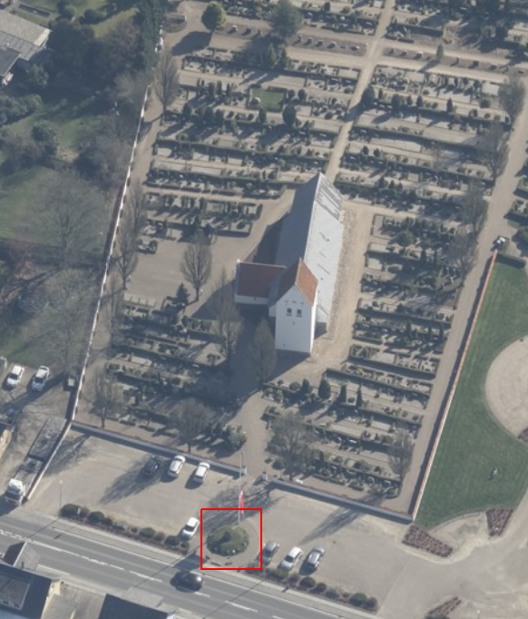
Dies ist ein Luftfoto vom 07.04.2023 von Skråfoto das die Kirche von Bække zeigt. Skråfoto ist eine Webanwendung, die von Klimadatastyrelsen weltweit kostenlos bereitgestellt wird - Freie Nutzung unter Beachtung der Lizenz: CC BY 4.0. Die Aufnahmen werden seit 2017 alle zwei Jahre erneuert und neben einer Senkrechtaufnahme wird ein Schrägbild aus jeder Himmelsrichtung angeboten, das man über eine Adresssuche aufrufen kann. Den Standort des Runensteins habe ich hier rot umrandet.
Auf dem Parkplatz vor der Kirche von Bække steht dieser Runenstein auf einem kleinen Hügel. Er befand sich bis 1810 in der Kirchhofmauer und wurde dann nach seiner Entdeckung vom Gastwirt in Bække (seit 1803), Herrn Anders Jochumsen Lund (*1765 - 15.01.1833 - link-LIVES), herausgeholt. Er ließ ihn in der Außenseite der Mauer, mit der Inschrift zum Weg, wieder anbringen, worüber nun jedermann die Inschrift sehen konnte. 1858 wurde der Stein zum Waffenhaus verbracht und 1923 an seinem jetzigen Platz errichtet.
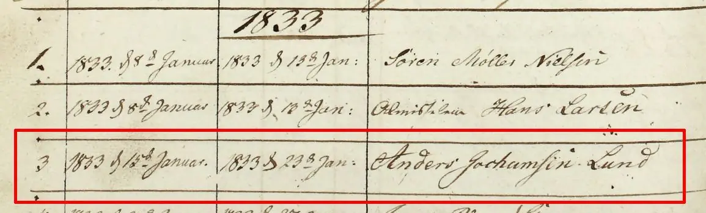
Inhaltsmäßig gehört dieser Stein mit den Runensteinen von Læborg und Horne zusammen, und der jeweils genannte Ravnunga-Tue ist wahrscheinlich ein und dieselbe Person. Häufig wird dieser Doppelname als "Tue, Ravns Nachkomme" übersetzt. Aufgrund ihrer Inschrift werden diese Runensteine auch oft mit Königin Thyre (Thyra) und dem nördlichen Hügel in Jelling in Verbindung gebracht, was jedoch keineswegs als sicher angesehen werden kann. Die Datierung des Runensteins liegt zw. 900 und 1000 n. Chr.
Michael Lerche Nielsen (Professor - Department of Nordic Studies and Linguistics in Kopenhagen) stellt in seinem Aufsatz "Ravnunge-Tue som navngiven viking, runestensrejser og myte" In: Runesten, magt og mindesmærker. Tværfagligt symposium på Askov Højskole 3.-5. oktober 2002. hikuin. Band 32 - 2005 - S. 7-22, etliche Überlegungen zu der Person an. So könnte der Name seiner Ansicht nach z.B. auch für eine Herkunftsbezeichnung, also "Tue aus Ravning" stehen, wobei in der Region Ravning im Vejle Ådal, aber auch Ravning im Kalvslund Sogn in Südjütland in Betracht kämen.In ihrem 2000 erschienenen Buch mit dem Titel "Sawyer, Birgit - The Viking-age rune-stones: custom and commemoration in early medieval Scandinavia - bringt Birgit Sawyer (*02.04.1945 - 07.05.2016, schwedische Historikerin) ab der S. 158 ff. einen Excursus - The tug-of-war over Thyre. Darin plädiert sie für ein radikales Umdenken in Bezug auf die Inschriften der Runensteine im Umkreis von Jelling.
Birgit Sawyer erklärte danach mehrfach, so z.B. in ihrem Artikel "Thyre in Jelling, Læborg und Bække" in dem Buch "Die Deutschen und das Europäische Mittelalter - Die Welt der Wikinger - 2002 - S. 376 ff.", dass es nach ihren Überlegungen am plausibelsten sei, dass Ravnunga-Tue der 2. Ehemann von Thyra (nach ihrer ersten Ehe mit
Dieser These von Birgit Sawyer folgt meines Wissens in der aktuellen Runen-Forschung ansonsten niemand!
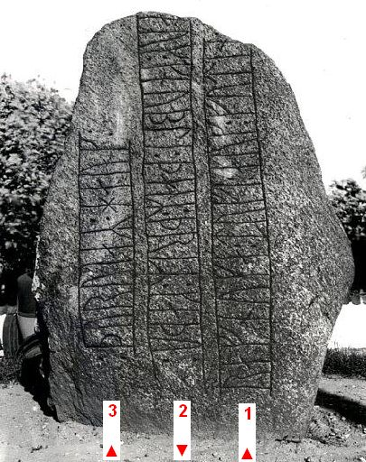
Die Inschrift wird bustrophed (abwechselnde Schreibrichtung) wie oben dargestellt gelesen.
Einige Fotos meiner Wikingertour 2013, die mich am 20. August 2013 nach Bække führte, habe ich hier:
Im Rahmen meiner 2022er Jütland Wikingertour war ich am Montag, 30.05.2022, vor Ort und konnte diese Fotografien anfertigen.
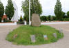 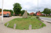 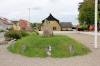 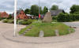
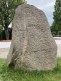 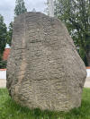 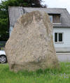 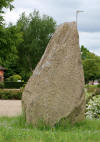 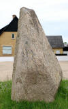 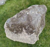
Die Kirche war verschlossen.
In den Berichten der dänischen Kirchengemeinden an die Altertümerkommission in Kopenhagen von 1807 (Danske præsters indberetninger til oldsagskommissionen af 1807, Wormianum 1995, Vest- og Sydjylland, S. 128) taucht diese undatierte und unsignierte Skizze des Runensteins von Bække auf. Dem Sitzungsprotokoll der Altertümerkommission vom 18.10.1810 ist zu entnehmen (Übersetzung): "Eine Runeninschrift auf einem Stein in der Kirchhofeinfriedung in Bække im Verwaltungsbezirk Andst im Stift Ribe".
Es handelt sich deshalb um die älteste bekannte Darstellung dieses Runensteins. Nicht einmal im Standardwerk "Lis Jacobsen/Erik Moltke - Danmarks Runeindskrifter - 1942 - Text" taucht die auf, was bedeutet, dass ihnen diese Aufzeichnung offenbar unbekannt war. Bestätigung dafür findet sich in Moltkes Buch "Jon Skonvig og de andre runetegnere. Et bidrag til runologiens historie i Danmark og Norge, Band II, 1958", S. 222, in dem er dort schreibt: "Arendts tegning, den første af stenen..."
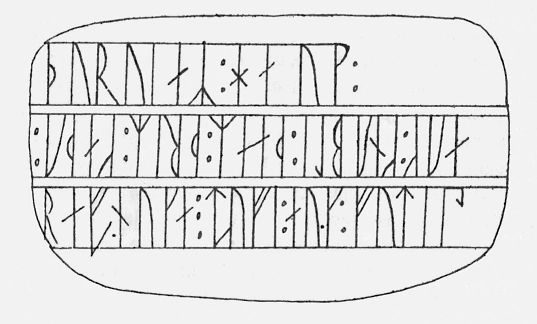
Scan aus: Danske præsters indberetninger til oldsagskommissionen af , Wormianum 1995, Vest- og Sydjylland, S. 128 - Lizenz: Public Domain
Als erste Institution staatlicher Denkmalpflege entstand nämlich am 22. Mai 1807 die "Königliche Kommission für die Aufbewahrung von Altertümern" in Kopenhagen. In der ihr angedachten Rolle als zentrale Sammelstelle für die in der Landschaft verstreuten Denkmäler, wurde von der Kommission im August 1807 ein Fragenkatalog über die Bischöfe an die Pfarrer/Kirchenbediensteten in jeder dänischen Gemeinde verschickt. Die über die Rückantworten erlangten Informationen sind heute von unschätzbarem Wert und seit geraumer Zeit über das fünfbändige Werk "Danske præsters indberetninger til oldsagskommissionen af 1807, Wormianum 1995" verfügbar.
Laut Moltke/Jacobsen hat Martin Friedrich Arendt (* 22. Februar 1773 in Altona; April 1823 in der Nähe von Venedig/Italien war ein deutscher Botaniker und Altertumsforscher)
 Bildquelle: Eigenes Foto aus seiner Hinterlassenschaft im
Antikvarisk -Topografisk Arkiv - Public
Domain
Bildquelle: Eigenes Foto aus seiner Hinterlassenschaft im
Antikvarisk -Topografisk Arkiv - Public
Domain
am 12.08.1811 die erste Bleistift Zeichnung angefertigt, die sich heute in Kopenhagen im "Antiqvarisk-Topografisk Arkiv" befindet, dass es da aber noch eine frühere Zeichnung gab, habe ich ja oben bereits ausgeführt.
Bei meinem Besuch im "Antiqvarisk-Topografisk Arkiv" in Kopenhagen am 27.09.2022 durfte ich diese beiden frühen Zeugnisse des Runensteins abfotografieren.
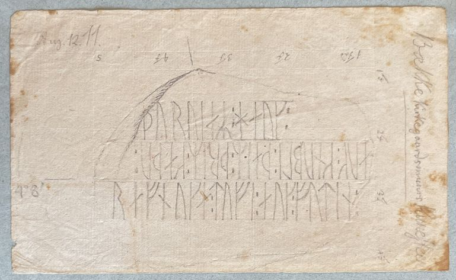

Durch Rasmus Nyerup (*12.03.1759 - 28.06.1829, dänischer Literaturhistoriker, Philologe, Folklorist und Bibliothekar)
 Bildquelle: 1827
aus Kunstsammlung abfotografiert -
Det Kgl. Biblioteks billedsamling - Lizenz:
Public Domain
Bildquelle: 1827
aus Kunstsammlung abfotografiert -
Det Kgl. Biblioteks billedsamling - Lizenz:
Public Domain
wird im Jahr 1824 das Werk mit dem Titel "Verzeichnis der in Dänemark 1824 noch erhaltenen Runensteine" veröffentlicht. Auf der Seite 26 bringt er dort diesen Eintrag:
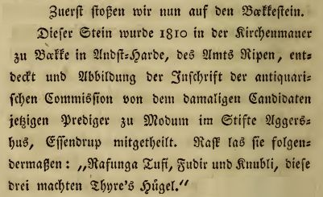
Die nächste Nachricht über den Runenstein stammt von Finn Magnusen (* 27. August 1781 in Skálholt/Island; 24. Dezember 1847 in Kopenhagen, isländischer Philologe und Archivar - link-LIVES)
 Bildquelle:
Wikimedia - Lizenz:
Public Domain
Bildquelle:
Wikimedia - Lizenz:
Public Domain
Er schreibt in
den "Antiqvariske
Annaler - Band IV - 1827" einen Aufsatz mit dem Titel "
"Über ein Gerücht ist mir bekannt geworden, dass ein bis dato unbekannter Runenstein vor ein paar Jahren im Dorf Becke, etwa 5 Meilen entfernt von Kolding in der Diözese Ribe entdeckt wurde. Trotz aller Bemühungen einiger Mitglieder der Altertümerkommission ist es ihnen meines Wissens nicht gelungen, vollständige Informationen darüber zu erhalten. Ich dachte daher, dass ich zu diesem Zweck den Orte besuchen sollte. Der 24. Juli 1821 wurde hierfür festgesetzt - aber am Morgen vor meiner Abreise erfuhr ich, dass der örtliche Pfarrer Hr. Bergenhammer aus Werst in Kolding aufhältig war. Ich suchte ihn damals auf, erfuhr aber von ihm nur, dass ein solcher Stein mit einer seltenen Inschrift bei Becke zu sehen sei und mir vom Gastwirt gezeigt werden könne. Der Inhalt oder die Tendenz der Inschrift war ihm völlig unbekannt; Er glaubte auch nicht, dass er, da er jetzt nach Læborg versetzt werden sollte, eine Zeichnung davon bekommen würde. Ich bin deshalb sofort nach Becke abgereist. Entlang der Straße, die über Leirskov, Ravnholt, Egholt usw. führte, wurden hier und da Grabhügel bemerkt, von denen einige gestört waren... Bei Kragelund begannen die Hügel in größerer Zahl zu erscheinen; Die Hauptlinie von ihnen scheint bis Becke bestanden zu haben. Als ich ankam, traf ich den Gastwirt A. J. Lund, der mir sofort die Information gab, dass ein großer Stein mit einer Runeninschrift auf einer Seite von ihm im Frühjahr 1807 innerhalb der Kirchhofmauer gefunden wurde (wo ein weiterer Eingang entstehen sollte). Er wurde sofort auf diese Seltenheit aufmerksam, entfernte den Stein von seinem alten Platz und errichtete ihn außen am Kirchhofwall, gestützt von den anderen Steinen, in einer solchen Position, dass die Inschrift nun für Alle deutlich sichtbar war. Er erklärte weiter, dass Ende des Jahres 1815 der Antiquar Hr. M. F. Arendt aus Altona zu Fuß zu ihm kam, sei mehrere Tage dort geblieben und hatte bei dieser Gelegenheit die Inschrift gelesen und gezeichnet. Er selbst hatte vor Ort eine Bleistiftzeichnung davon hinterlassen, zusammen mit einem gewöhnlichen Runenalphabet. Die Zeichnung war von Gastwirt selbst noch einmal mit der Feder kopiert worden. Ich habe nun beide Zeichnungen mit der Inschrift des Steins selbst verglichen und sie für vollkommen richtig befunden. Der Stein (Tav. II. Abb. 6 - siehe unten) scheint ein gewöhnlicher Felsbrocken in seiner natürlichen Form zu sein. Seine Länge beträgt 2 1/4 Ellen, die Breite 1 Elle 3 Viertel und 2 Zoll. Die Inschrift (der Länge nach wie ein Bustrophedon, dessen Lesung von unten beginnen muss) lautet wie folgt:
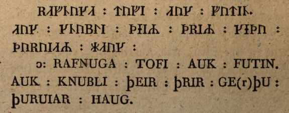

Hier lesen Sie die Namen von drei Männern, die Thyres Hügel erbaut hatten. Man kann schnell erahnen, dass hier Königin Thyre Dannebod gemeint ist. Hr. Arendt hat es gut gemacht, denn er hat der feinen Zeichnung diese Worte hinzugefügt: "Denkmal aus dem 10. Jahrhundert" Mehr Wahrscheinlichkeitsgründe für diese Meinung werde ich darlegen, indem ich mich mit dem Runenstein in Læborg befasse. Auf jeden Fall ist es sehr seltsam, besonders da er Worm oder anderen Autoren, die unsere Altertümer beschrieben haben, nicht bekannt war. Gastwirt Lund (ansonsten mit einfachem bäuerlichem Status und Erziehung) verdient Anerkennung für die Aufmerksamkeit und Sorgfalt, mit der der Stein entdeckt und aufbewahrt hat, besonders wenn man - leider! - manchmal bei studierten Beamten eine bestimmte Denk- und Handlungsweise feststellen muss, bei der man es keineswegs vermuten sollte. Auch die Altertümerkommission hat seine Fürsorge unterstützt, indem sie Hr. Lund zum Dank eine Kopie der Krönungsmedaille von König Fredrik dem Sechsten, begleitet von einem amtlichen Schreiben, zukommen ließ..."
Anmerken möchte ich dazu, dass ausweislich der erhaltenen Zeichnung von Martin Friedrich Arendt (*1773-1823, Deutscher Botaniker und Altertumsforscher) - siehe oben - seine Begutachtung des Runensteins am 12.08.1811 gewesen sein soll, während hier von 1815 die Rede ist. Auf dieser erhaltenen Zeichnung/Rückseite steht auch nichts von "Monument fra det 10de Aarhundrede". Es muss also eine weitere Zeichnung von Martin Friedrich Arendt aus dem Jahr 1815 existiert haben, die er dem Gastwirt Lund überließ und die dieser mit seiner eigenen Finnur Magnusson vorlegte, worüber dieser die beiden vergleichen konnte.
In dem gleichen Werk "Antiqvariske Annaler - Band IV - 1827" bringt Rasmus Christian Rask (* 22.11.1787 - 14.11.1832, dänischer Indogermanist und Polyglott - link-LIVES - Er sprach 25 Sprachen und Dialekte, mehr als 50 hatte er studiert!)
 Bildquelle:
Wikipedia - Lizenz:
Public Domain
Bildquelle:
Wikipedia - Lizenz:
Public Domain
ab der S. 267 eine Abhandlung mit dem Titel "
Durch Johan Gustav Liljegren (*27.02.1791 -02.06.1837, schwedischer Nationalarchivar und Archäologe)
 Bildquelle:
Schwedisches Reichsarchiv - Lizenz:
Public Domain
Bildquelle:
Schwedisches Reichsarchiv - Lizenz:
Public Domain
wird in seiner Abhandlung "Run-Urkunder" von 1833, auf der S. 173 diese kurze Info veröffentlicht.
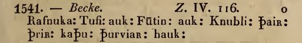
Niels Matthias Petersen (meist N. M. Petersen abgekürzt, *Nacht vom 24./25. Oktober 1791 - 11. Mai 1862, dänischer Literaturwissenschaftler zur Skandinavistik und Historiker - link-LIVES - Lebensbeschreibung auf dänisch) bringt in seinem Werk "Danske Historie i Hedenold", Band II, 2. Auflage, 1854, auf der S. 133 diese Passage:
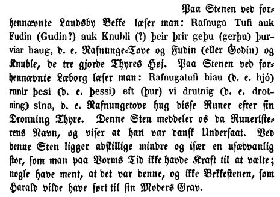
Carl Christian Rafn (*16.01.1795 - 20.10.1864, Altertumsforscher - link LIVES - Bestattungsprotokoll)
 Bildquelle: Zeichner
Magnus Petersen -
Det Kgl. Biblioteks billedsamling - Lizenz:
Public Domain
Bildquelle: Zeichner
Magnus Petersen -
Det Kgl. Biblioteks billedsamling - Lizenz:
Public Domain
macht in der "Antiquarisk Tidsskrift", die für die Jahre 1852-54 erschienen war, ab der S. 280ff. Ausführungen zum "Bekke-Stenen". Neben den allgemeinen Infos zu den Fundumständen und der bekannten Lesung durch Martin Friedrich Arendt, Finn Magnusen und Rasmus Christian Rask erklärt er, dass er sich wegen einer neuen Untersuchung und hinsichtlich der Inschrift an den örtlichen Pfarrer Herrn C. E. Wraae (Carl Emil Wraae, *23.03.1811 - 27.07.1856) gewandt hätte, um möglichst absolute Sicherheit zu erlangen. Dieser hätte mit höchster Bereitwilligkeit Auskunft erteilt. Er hätte ihm zuvor eine Kopie einer Zeichnung zugesandt, die dieser vor Ort mit dem Original verglich. Dann bringt Carl Christian Rafn diese Wiedergabe der Inschrift:
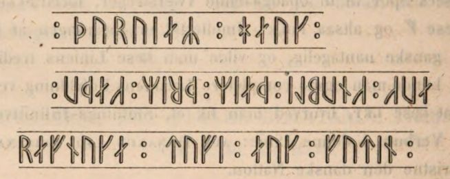
Danach setzt er sich über mehrere Seiten mit der Inschrift und ihrer Bedeutung, den darin vorkommenden Namen usw. auseinander.
Sophus Bugge (*5. Januar 1833 - 8. Juli 1907, norwegischer Philologe, der sich auch mit Runologie beschäftigte)
 Bildquelle:
Wikipedia
- Lizenz:
Public Domain
Bildquelle:
Wikipedia
- Lizenz:
Public Domain
hat in dem Buch "Tidskrift for Philologi og Pædagogik", Band VII, 1866-67, auf der S. 247 diese Anmerkung:
"... En Runesten af den almindelige Art, Bækkestenen (ved Kirken) i Jylland, har et Navn, der sikkert er dannet paa samme Maade: KNUBLI, skjont det er mindre sikkert, hvorledes det har været udtalt; da Gnupr er et hyppigt Navn, tror jeg, det snarest bor forstaaes som Gnypli."
Übersetzung: ... Ein Runenstein der üblichen Art, der Bække Stein (bei der Kirche) in Jylland, hat einen Namen, der wahrscheinlich auf die gleiche Weise gebildet wird: KNUBLI, obwohl weniger sicher ist, wie er ausgesprochen wurde; Da Gnúpr ein häufiger Name ist, denke ich, dass er als Gnýpli verstanden wurde.
Eine Radierung von 1875 von Heinrich Hansen (*23.11.1821 - 11.07.1890, Architekturmaler - link-LIVES - Bestattungsprotokoll)
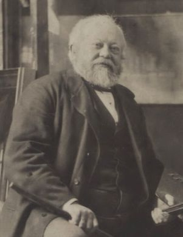
findet sich in dem Buch "Kongehøiene i Jellinge og deres Undersøgelse efter Kong Frederik VII's Befaling i 1861" von
Jacob Kornerup (*19.11.1825 - 09.03.1913, dänischer Archäologe und Zeichner aus Roskilde - link-LIVES)
 Bildquelle:
Wikipedia
- Lizenz:
Public Domain
Bildquelle:
Wikipedia
- Lizenz:
Public Domain
mit einem Vorwort von Prof. Jens Jacob Asmussen Worsaae (*14.03.1821 - 15.08.1885, dänischer Archäologe und Vorgeschichtler - link-LIVES - Bestattungsprotokoll)
 Bildquelle: Fotografie
zw. 1863-1900 von Fotograf Budtz Müller
(*26.12.1837 -
30.12.1884) -
Det Kgl. Biblioteks billedsamling - Lizenz:
Public Domain
Bildquelle: Fotografie
zw. 1863-1900 von Fotograf Budtz Müller
(*26.12.1837 -
30.12.1884) -
Det Kgl. Biblioteks billedsamling - Lizenz:
Public Domain
aus dem Jahr 1875, Tafel XX.
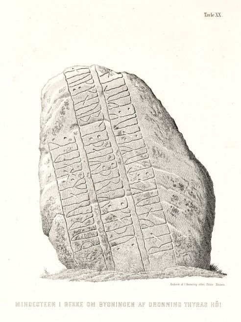
Der Digitale Sammlung des Nationalmuseum Kopenhagen entnommen - Lizenz: CC-BY-SA
In dem 1880 erschienen dänischen Runenwerk von Prof. P. G. Thorsen (*07.08.1811 - 06.05.1883, Bibliothekar, Runenforscher und Historiker - link-LIVES - Artikel: Levnedsbeskrivelser af de ved Københavns Universitets Firehundredaarsfest promoverede Doktorer, Illustreret Tidende 1882, Nr. 1235 - vom 27.05.1833 / Grabstein in Varde / Eheschließung in Varde am 19. August 1848)
 Bildquelle: Fotografie zw. 1863-1900 von
Fotograf Budtz Müller (*26.12.1837 -
30.12.1884) -
Det Kgl. Biblioteks billedsamling - Lizenz:
Public Domain
Bildquelle: Fotografie zw. 1863-1900 von
Fotograf Budtz Müller (*26.12.1837 -
30.12.1884) -
Det Kgl. Biblioteks billedsamling - Lizenz:
Public Domain
"De danske runemindesmærker beskrevne og forklarede, anden Afdeling, Jyllands Runemindesmærker, II. Text" findet sich seine Beschreibung zum Runenstein. Im Band I. Afbildninger, 1879, Nr. 5 - findet sich diese Zeichnung von Prof. Julius Magnus Petersen (*04.09.1827 - 31.01.1917, Archäologischer Zeichner und Restaurator - link-LIVES - Bestattungsprotokoll)
 Bildquelle: Fotografie
von 1903 von Fotograf Marius Christensen
(*24.6.1874 -
25.6.1907) -
Det Kgl. Biblioteks billedsamling - Lizenz:
Public Domain
Bildquelle: Fotografie
von 1903 von Fotograf Marius Christensen
(*24.6.1874 -
25.6.1907) -
Det Kgl. Biblioteks billedsamling - Lizenz:
Public Domain
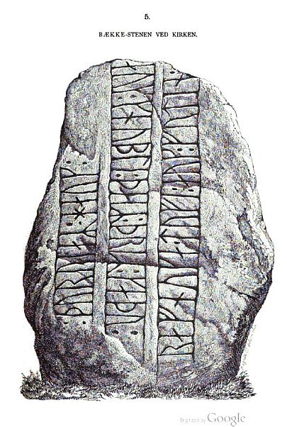
Google ScanP. G. Thorsens Nachlass (Bezeichnet als: P. G. Thorsens optegnelser, tegninger m.m. vedrørende runer og runemindesmærker - überführt aus der Kopenhagener Universitätsbibliothek 1929 - Gemäß Ministerialschreiben vom 04.03.1929; früher benannt als Additamenta 612 kvart) - befindet sich heute in der Königlichen Bibliothek unter NKS 3296 kvart (in mehreren einzelnen Pappschachteln). In der Pappschachtel Nr. 17 wird diese Zeichnung von Magnus Petersen, datiert auf den 04.09.1871, verwahrt, die augenscheinlich später als Druckvorlage - siehe oben - diente.


In seiner Hinterlassenschaft fand ich auch noch - Pappschachtel 4 - dieses Notizblatt, das er persönlich auf den 17. Juni 1838 datiert hat und das seine Handschrift trägt. Darauf findet sich im oberen Bereich eine Zeichnung die auf der o.a. ersten Zeichnung von 1807 basiert. Er hat dazu auch aufnotiert - übersetzt - ...vermutlich die erste eingesandte ...." Dieses Blatt hat dann offenbar Erik Moltke, aus den bereits dargelegten Gründen, nicht vorgelegen. Die untere Zeichnung ist der von Martin Friedrich Arendt vom 12.08.1811 nachempfunden und wurde von ihm offenbar am 12. August 1843 hinzugefügt (Anmerkung rechts außen).

Auch bei Prof. Ludv. F. A. Wimmer (*07.02.1839 - 29.04.1920, Philologe und Runenforscher - link-LIVES - Politiets registerblade - Bestattungsprotokoll)
 Bildquelle:
Fotografie zw. 1877-1900 von Fotograf Hansen & Weller
-
Det Kgl. Biblioteks billedsamling - Lizenz:
Public Domain
Bildquelle:
Fotografie zw. 1877-1900 von Fotograf Hansen & Weller
-
Det Kgl. Biblioteks billedsamling - Lizenz:
Public Domain
De danske runemindesmærker undersøgte og tolkede af Ludv. F. A. Wimmer, Andet Bind, Runestenene i Jylland og på øerne. 1899-1901, Nr. 5, S. 35 wurde eine Zeichnung von Magnus Petersen (*04.09.1827 - 01.02.1917, Archäologischer Zeichner und Restaurator) verwendet, die ich hier wiedergebe - eigener Scan aus dem Exemplar in meinem Besitz.
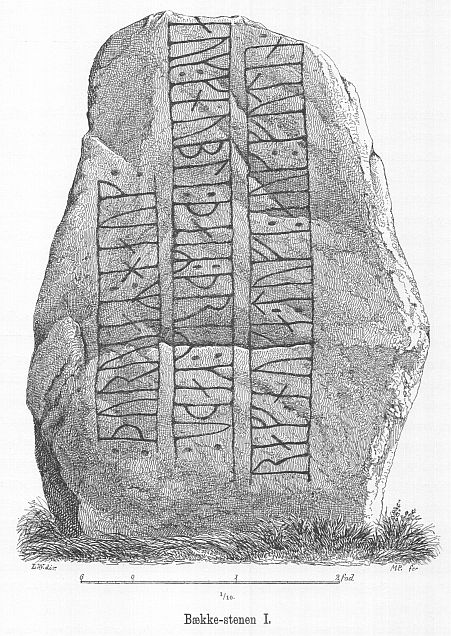
Ludv. F. A. Wimmer hat den Runenstein persönlich vor Ort am 19/20. August 1878 und nochmals am 06.07.1882 untersucht.
Er hat seine jahrelangen Aufzeichnungen der
"Kgl.
Bibliotek" in
Kopenhagen
überlassen. Ein
Verzeichnis darüber wurde 1915 in Buchform herausgegeben -
In seinen Unterlagen in der Königlichen Bibliothek in Kopenhagen befinden sich unter "III - Originaltegninger af de danske Runemindesmærker, udførte paa Undersøgelsesrejserne af Magn. Petersen og kontrollerede paa Stedet af Ludv. Wimmer, samt Prøvetryk af de paa Grundlag af de nævnte Tegninger, Aftryk o. s. v. til De danske Runemindesmærker" udførte Afbildninger med Wimmers Rettelser" zu dem Runenstein von Bække unter der Nr. 22 diese Aufzeichnungen von 1878 und 1882, die ich am 27.09.2022 fotografieren durfte.


Die Zeichnung - von herausragender Qualität - ist handsigniert von Magnus Petersen und mit Datum vom 19.07.1878 versehen.

Der dänische Runologe Erik Moltke (*04.04.1901 - 19.10.1984, Runologe, Historiker - link-LIVES)
 Bildquelle: Scan von Buchumschlag "Runerne i Danmark og ders
oprindelse" - Erik Moltke - 1976 - Lizenz:
CC-BY-SA
Bildquelle: Scan von Buchumschlag "Runerne i Danmark og ders
oprindelse" - Erik Moltke - 1976 - Lizenz:
CC-BY-SA
hat diese schwarzweiß Aufnahme am 28.04.1930 gemacht.
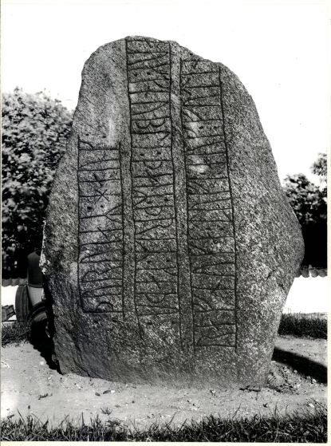
Der Digitale Sammlung des Nationalmuseum Kopenhagen entnommen - Lizenz: CC-BY-SA
Im Vorfeld zu dem 2016 erschienenen Buch von Lisbeth M. Imer (*1973, Runologin am Nationalmuseum Kopenhagen) "Danmarks Runesten - en fortælling" reiste sie mit dem Fotografen Roberto Fortuna zur Bestandsaufnahme durch die Lande. Dieser hat die Runensteine mit Schräglicht aufgenommen und darüber wirklich herausragende Fotos erzielt. Diese Fotografie wurde am 08.11.2011 aufgenommen.
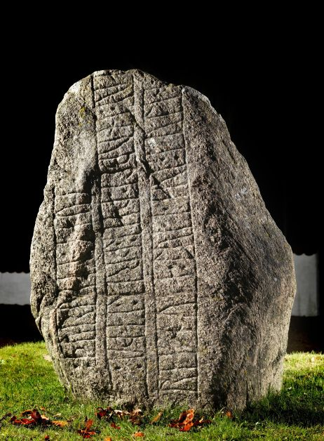
Der Digitale Sammlung des Nationalmuseum Kopenhagen entnommen - Lizenz: CC-BY-SA
Den Eintrag zu diesem Runenstein aus der dänischen Runen Datenbank im Internet kann man hier abrufen.
Die Informationen in "Fund og Fortidsminder" zu dem Runenstein finden sich hier. Darin ist inzwischen dieser Zustandsbericht des Steinrestaurators Leif Vognsen aus dem Jahr 2018 eingebettet.
Über die Webseite "Runes" - ein Forschungsprojekt der Akademie zu Göttingen - kann man diese Informationen zum Runenstein von Bække abrufen.
Literaturhinweise (ergänzt 06.11.2023):
Magnusen, Finn (* 27. August 1781 in Skálholt/Island; 24. Dezember 1847 in Kopenhagen, isländischer Philologe und Archivar) - "Antiqvariske Annaler - Band IV - 1827" - "Antiquarisk tidsskrift - 1852-54 - Runestene fra Harald Blaatands Tidsalder - darin: S. 280 - 283 - Bekke-Stenen
Marius Kristensen (*27.04.1869 - 02.11.1941, Hochschullehrer, Dänischer Sprachforscher) - Fra Ribe Amt 1928-31 - Ribe Amts Runeindskrifter - S. 633 - 638
Østergaard, Knud Høgsbro (*20.11.1900 - 01.10.1987, Pfarrer) - Bække Kirke og Ravnunge-Tues runesten. Nogle kirkearkæologiske iagttagelser - Fra Ribe Amt 1975 - S. 340361
Sawyer, Birgit (*02.04.1945 - 07.05.2016, schwedische Historikerin) - The Viking-age rune-stones: custom and commemoration in early medieval Scandinavia - 2000 - S. 158 ff. - Excursus - The tug-of-war over Thyre
Sawyer, Birgit und Sawyer, Peter (*25.06.1928 - 07.07.2018, britischer Historiker) - Die Deutschen und das Europäische Mittelalter - Die Welt der Wikinger - 2002 - S. 376 ff - "Thyre in Jelling, Læborg und Bække"
Michael Lerche Nielsen (*1964, Professor - Department of Nordic Studies and Linguistics in Kopenhagen) - Ravnunge-Tue som navngiven viking, runestensrejser og myte. In: Runesten, magt og mindesmærker. Tværfagligt symposium på Askov Højskole 3.-5. oktober 2002. hikuin - Band 32 - 2005 - S. 7-22
Sawyer, Birgit (*02.04.1945 - 07.05.2016, schwedische Historikerin) - Thyre, Harald, and Ravnunge-Tue. In: Runesten, magt og mindesmærker. Tværfagligt symposium på Askov Højskole 3.-5. oktober 2002. hikuin - Band 32 - 2005 - S. 31-36Marie Stoklund (*11.08.1934 - 03.09.2021, Runologin) - Tolkningen af Bække-, Læborg- og Jelling-indskrifterne og meningen med at riste runesten. In: Runesten, magt og mindesmærker. Tværfagligt symposium på Askov Højskole 3.-5. oktober 2002. hikuin - Band 32 - 2005 - S. 37-48
Imer, Lisbeth M. - Fortidens kalejdoskop om definitionen af kontekster i runologien - Arkæologisk Forum Nr. 24 - Mai 2011 - S. 37-42
Imer, Lisbeth M. - The Danish runestones when and where? - Danish Journal of Archaeology, 3:2, 2014, S.164-174